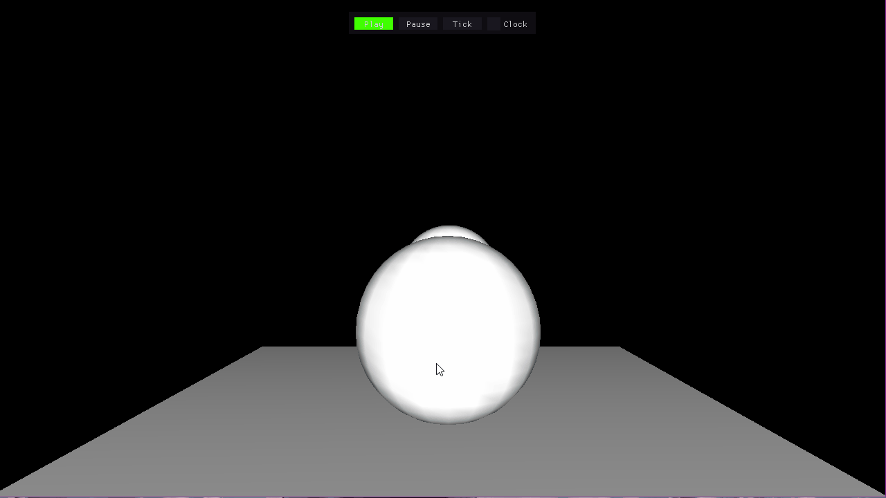
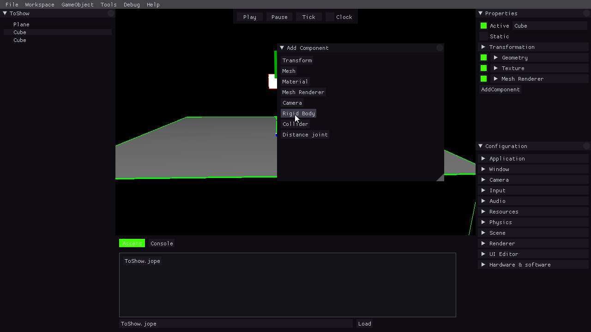

Physics sub-system
In this section you will find a detailed explanation on what is and how to use the physics system in our engine. The physics system is implemented from the Assigment_3.x releases onward.
Introduction
The physics system consists of an implementation of the NVIDIA PhysX technology into our engine to create physics simulations in-game. We based our implementation on Unity physics system, to do so we have added a few new components to the GameObjects to use them in the physics simulation. To create a physic simulation in our engine you need to create a GameObject and add a few of the new components which are Collider, RigidBody and DistanceJoint, a detailed explanation can of how to use them can be find below, the simulation will only take place during the game mode, the physics system uses the game update time so modifying it will change the speed of the simulation (Slow motion physics!!!).
Physics components
Collider
This component will give the GameObject it's physics shape, this shape is what the physics simulation will use to move the object around and apply forces to them, note that the collider just gives the shape and by itself won't simulate physics, without a RigidBody it will simply act as a static immovable wall for other physics objects.
When you add a new collider to the GameObject (use the AddComponent button on properties window) it will generate a basic sphere collider for the GameObject, you must edit it to match your needs. The first parameter will allow you to change it's basic shape (sphere, capsule or box), once you have the basic shape you may modify its position, angle and radius to match the shape you want, if you need a simple form you can try to use the Size from AABB button, this will try to match the shape of the collider to the shape of the GameObject to the shape of the mesh AABB box, if using this button is recommended to reset the transform of the GameObject since it will help get a more precise match. For a more advanced simulation you can also change the static and dynamic friction of the collider as well as it's restitution.
Colliders should be rendered as a green wireframe around the object, if you can't see the wireframe please check the section below on Physics rendering, also if the object has a mesh try rendering it in wireframe mode since it is possible that the collider is too small and it's inside the mesh itself.
RigidBody
The RigidBody component is what will give the GameObject the possibility to act dynamically in the simulation, this component will take the collider defined in the Collider component and use it to simulate physics and move the GameObject accordingly, note that even though you don't need a collider component to use the RigidBody without it the RigidBody won't have a body to collide and will simply fall to the void.
Right now this component is very simple and it only allow to change it's mass and to make it dynamic or kinematic, setting it as kinematic will make it act as a collider, other dynamic objects will collide with it but they will not affect the kinematic object state.
Distance joint
Distance joint components link two RigidBody between each other with a point to point constraint, note that a GameObject can't have a Distance joint without a RigidBody component, if you create a distance joint without a RigidBody the RigidBody will be automatically created.
The first object the distance joint has is the parent of the component, to get the second object and create the joint click on the Select button and then click on the 2 object (using both hierarchy window or the scene itself). Once the joint is created you can modify both the max distance and the minimum distance, the constraint will pull the objects apart when they are closer than the minimum distance and pull them together if they are further apart than the max distance.
Find us on: